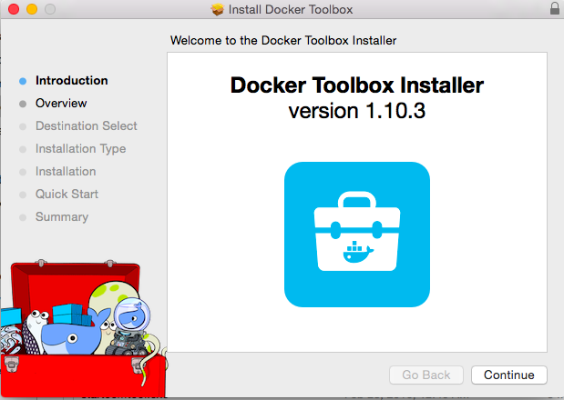

Docker 是什麼呢，他是一個虛擬機器的軟體，可以在一個虛擬的環境下執行 Application，例如我可以在 Linux 系統中，透過 Docker 虛擬出好幾台的 Linux 系統，那為什麼我要這麼多台 Linux 系統，假設我寫一個 C/C++ 的程式碼，但是我必須在各種不同的 OS 上做測試，例如 Ubuntu, CentOS, debain 等等，那麼我不用同時安裝這麼多系統，只要透過 Docker 就能輕鬆的摸擬各種環境。
那 Docker 跟 VirtualBox (VMware) 有什麼不同呢? VirtualBox 虛擬機器會建立一個獨立的 CPU, Memory 與 Network 網路 ，就像是摸擬出一台跟真的一樣的機器，因為摸擬的部分很大，所以VirtualBox 的執行效能會比較差，而且 CPU 與 Memory 的用量很多； 而 Docker 只是單純的使用 LXC 來模擬出 Linux File System ， 當你在 Docker 執行一個程式時，會直接使用主機的 CPU, Memory 來運作，所以我們也可以把 Docker 稱為一個 VE System : Virtualization Environment
如何在 Mac 安裝 Docker
因為 Docker 只能在 Linux kernel 下執行，所以我們不能直接將 Docker 安裝在 Mac OS 上。
Docker 在 Mac 環境上不斷的更新，目前已經出了三個版本，分別是 boot2docker, docker-machine, docker xhyve ，其中 boot2docker, docker-machine 都會用到 virtual box ，主要是為了在 Mac 上安裝一個 Linux 環境，剛剛有說過， Docker 目前只能在 Linux 上運作，所以最簡單的解決方式，就是裝一個 Linux OS 到 Mac 裡，當然這樣 Performance 一定不會太好，不過對於開發&測試&學習環境來說，這仍然是一個不錯的選擇。
Docker xhyve 是目前最新的 Docker on Mac 的工具，他可以在 Mac 摸擬 Linux kernel ，所以省去了安裝 Virtual box 的動作 (xhyve 安裝方式可以看這裡 https://github.com/zchee/docker-machine-driver-xhyve )。
- Docker for Mac 官方教學 https://docs.docker.com/engine/installation/mac/
接下來我會用第二個版本 "docker-machine" 來做示範。
下載 Docker
在官方的教學網址中，有兩個安裝 Docker 的方式 ，一個是新的 Docker for Mac : xhyve ， 另一個是 Docker toolbox ，這裡我選擇的是 docker toolbox ，並下載的 Docker 版本是 1.10.3 ，下載網址如下。
安裝並建立 Docker OS
下載完成後，點擊兩下檔案就可以安裝了，注意它可能會要求你先裝好 virtualbox ，這個是免費軟體，Google 搜尋就可以找到了。
安裝完成後，Docker toolbox 提供了一個快速建立 Linux 含 Docker 的方式，這裡我是選擇左邊的選項 Docker Quickstart Terminal ，它會幫我們建立一個 Linux ，並在上面安裝 Docker ，很容易吧~。
- Creating CA: /Users/puritys/.docker/machine/certs/ca.pem
- Creating client certificate: /Users/puritys/.docker/machine/certs/cert.pem
- Running pre-create checks...
- (default) Default Boot2Docker ISO is out-of-date, downloading the latest release...
- (default) Latest release for github.com/boot2docker/boot2docker is v1.11.2
- (default) Downloading /Users/puritys/.docker/machine/cache/boot2docker.iso from https://github.com/boot2docker/boot2docker/releases/download/v1.11.2/boot2docker.iso...(default) 0%....10%....20%....30%....40%....50%....60%....70%....80%....90%....100%
- Creating machine...
- (default) Copying /Users/puritys/.docker/machine/cache/boot2docker.iso to /Users/puritys/.docker/machine/machines/default/boot2docker.iso...
- (default) Creating VirtualBox VM...
- (default) Creating SSH key...
- (default) Starting the VM...
- (default) Check network to re-create if needed...
- (default) Found a new host-only adapter: "vboxnet1"
- (default) Waiting for an IP...
- Waiting for machine to be running, this may take a few minutes...
- Detecting operating system of created instance...
- Waiting for SSH to be available...
- Detecting the provisioner...
- Provisioning with boot2docker...
- Copying certs to the local machine directory...
- Copying certs to the remote machine...
- Setting Docker configuration on the remote daemon...
- Checking connection to Docker...
- Docker is up and running!
- To see how to connect your Docker Client to the Docker Engine running on this virtual machine, run: /usr/local/bin/docker-machine env default
- == .
- == == == ==
- == == == == == ===
- /"""""""""""""""""\___/ ===
- ~~~ {~~ ~~~~ ~~~ ~~~~ ~~~ ~ / ===- ~~~
- \______ o __/
- \ \ __/
- \____\_______/
- docker is configured to use the default machine with IP 192.168.99.100
- For help getting started, check out the docs at https://docs.docker.com
執行成功後，Docker toolbox 會建立一個名叫 default 的 Linux 系統，而上面已經裝好了 docker 的軟體，接下來我就簡稱他為 Docker Host，另外系統訊息告訴我們說，Docker container 的 ip 是 192.168.99.100 , 它溝通的 port 預設是 2376 ，所以我可以用 "telnet 192.168.99.100 2376" 這個指令測試一下， Docker Container 是否正常運作，看到下面這個訊息就代表 docker 已經成功建立起來囉。
- telnet 192.168.99.100 2376
- Trying 192.168.99.100...
- Connected to 192.168.99.100.
- Escape character is '^]'.
- ]
檢查 Docker OS
如果你不知道 Docker Host 的 IP 與 port ，那麼你可以用 docker-machine ls ，這個指令來檢查，又或者你可以在 Mac 裡打開 Virtual Box 。
- NAME ACTIVE DRIVER STATE URL SWARM DOCKER ERRORS
- default - virtualbox Running tcp://192.168.99.100:2376 v1.11.2
這個指令 "docker-machine env" 也可以取得 Docker 相關的訊息。
- docker-machine env
- export DOCKER_TLS_VERIFY="1"
- export DOCKER_HOST="tcp://192.168.99.100:2376"
- export DOCKER_CERT_PATH="/Users/www/.docker/machine/machines/default"
- export DOCKER_MACHINE_NAME="default"
- # Run this command to configure your shell:
- # eval $(docker-machine env)
建立一個 ubuntu container
你可以輸入 $ docker run -t -i ubuntu:12.04 /bin/bash 來建立一個 container ，但是你會收到這個訊息 "docker: Cannot connect to the Docker daemon. Is the docker daemon running on this host?". 原因是 docker 不知道 default docker OS 的系統是裝在那一台 virtual machine ，IP 是什麼 ，你必須先把環境變數設定正確，可以用指令 "docket-machine env default " 來檢查 default docker 的設定，再把下面這個指令將環境變數寫入。
- eval "$(docker-machine env default)"
- docker run -t -i ubuntu:12.04 /bin/bash
- docker run -t -i ubuntu:12.04 /bin/bash
- Unable to find image 'ubuntu:12.04' locally
- 12.04: Pulling from library/ubuntu
- cc99613160bd: Pull complete
- 7b4fddeacb94: Pull complete
- 25455fa86fcc: Pull complete
- 087ee67bc4a3: Pull complete
- Digest: sha256:ab81ef94fcfbec335c8a528f90f3dbb627830556f55c31cd720198534b44370f
- Status: Downloaded newer image for ubuntu:12.04
- root@bb230bd64efa:/#
啟動 container 成功後，你會看到上面這個訊息，而且系統已經幫你登入新建好的 ubuntu ，你可以使用任何 ubuntu 上的相關指令。
container 相關指令
- docker run -d -P --name web nginx : 建立一個裝好 nginx service ，名為 web 的 Linux Machine。
- docker run -d -P -v /www/site:/usr/share/nginx/html --name mysite nginx
- docker port mysite
- docker cp xxx.file 20e8aa9f9a53:/ : 傳送一個檔案到 container 。
手動建立 Docker OS
如果你在使用 Docker 過程中，有碰到太奇怪，無法解決的問題，那麼你可以選擇手動移除 Docker Host (預設叫 default )，再重新建立一個新的 Docker Host。
首先我們要停用 default 這個預設 Docker toolbox 幫我們建好的 Docker Host 。
- docker-machine stop default
再來移除他，請注意這個動作會移除 Docker 的所有資料，請先確定你的重要資料都已備份。
- docker-machine rm default
最後下這個指令，就可以重新建立一個新的 Docker Host 囉 ， docker 預設只有 20GB 硬碟容量，建議加大到 40 GB 以上。
docker-machine create --driver virtualbox --virtualbox-disk-size "40000" default
volume - mount
如果你想要在 docker container 掛載根目錄的資料夾，例如 /my_dev ，我使用 -v /my_dev:/my_dev 這個方式是無效的，原因是 Docker 在 Mac 中是一個 VitualBox Machine ，這個 machine 本身沒有 /my_dev 目錄，簡單的做法是先手動將 Mac 的 /my_dev mount 到 virtual machine 中。
VirtualBox Machine 必需先安裝 GuestAdditions ，先用 VirtualBox UI 介面，掛載 VBoxGuestAdditions.iso ，在選單中的 DeviceInsert Guest Addition CD Image，掛載好再執行下面的指令，掛載的時候要特別注意，第一顆 CD Rom 一定要是 boot2docker.iso 不然 VirtualBox 會打不開，我的解法是先用第一顆 CD Rom 開機，開機成功後，再強迫移除 CD Rom iso ，重新點擊一次 "Insert Guest Addition CD Image" ，這時就可以安裝 Guest Addition ，安裝成功後再把 boot2docker.iso 重新掛載到第一顆 CD Rom。
- docker-machine ssh : 登入 virtual machine
- mkdir d
- sudo mount /dev/sr1 d
- cd d
- sudo sh ./VBoxLinuxAdditions.run : 裝完就可以退出了。
再來執行 mount 執令
- docker-machine stop : 先停掉 virtual machine
- VBoxManage sharedfolder add default --name my_dev --hostpath /my_dev --automount
- docker-machine start
移除方式
- docker-machine stop
- VBoxManage sharedfolder remove default --name /my_dev
Docker 指令
| 指令 | 說明 |
|---|---|
| docker ps | 顯示所有 containers |
| docker images | 顯示所有的 images |
| docker rmi -f db7e8a0d84e3 | 移除一個 image |
| docker pause bb230bd64efa | 停止 container 中的所有 processes |
| docker unpause bb230bd64efa | 取消停止 container 中的所有 processes |
| docker logs bb230bd64efa | 查看 container 的 log |
| docker stop bb230bd64efa | 停止 container 運作 |
| docker start bb230bd64efa | 啟用 container |
| docker commit bb230bd64efa ubuntu:12.04 | commit container 中的修改， bb230bd64efa 是 container id， ubuntu:12.04 是 image 名稱 |
| docker run -t -i ubuntu:12.04 /bin/bash | 啟動 container ，並登入 |